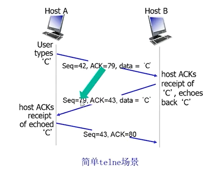

# 传输层原理
传输层，不管是 TCP 还是 UDP，会同时支撑很多应用进程。源端如何复用，目标端如何解复用还给相应的进程？
可靠数据传输原理 RDT：非常经典、重要。下层 IP 是不可靠的，但 TCP 如何向上层提供可靠服务？为什么会不可靠，要引入什么机制保证可靠？
流量控制：TCP 和对等的 TCP 实体怎么协作，实现流量控制，以至于不会发送太快，从而超出接收方的处理能力。
拥塞控制：如果发送方和接受方的处理速度都足够快，但是网络路径上有拥塞，那么就需要有一个拥塞的感知，然后恢复出来。如果没有拥塞控制的机制，那么网络几乎无法使用。学习：原因、表现、检测、控制
# 概述和传输层服务
传输层向上层提供的是进程与进程之间的，以 message 报文为单位的，逻辑的通信。
报文的传输：应用层交给传输层的报文，如果比较长，会被分成若干个报文段。以段为单位，形成本层的 PDU（协议数据单元）。到对方，对方把头部去掉，然后把段的内容取出来，以字节流的形式交给上面的应用进程。（借助网络层的服务）
** 可靠性、安全性可以在传输层加强。延迟、带宽不可以在传输层优化。** 瓶颈式的链路制约了网络的性能。
多路复用和解复用（功能上非常重要）：
ip 是从主机到主机的。传输层引入 port 端口号区分为进程到进程。
- TCP
源端：传输层从应用层拿下 message，然后添加 TCP 头部（包含源端口和目标端口），形成 TCP 的段
TCP 段同源 ip 目标 ip 再往下交，然后在 TCP 段前面加上 IP 头部（包括源 ip 和目标 ip），形成 IP 数据报。
借助网卡打出去。
目标端：收到了以后，把 ip 的载荷部分（报文体）拿出来，然后得到 TCP 段。
根据 TCP 段的 TCP 头携带的端口信息，然后查表找到 socket，将 message 发送给应用进程
- UDP
源端：传输层从应用层拿下 message，socket 以及 & cad 结构体（包含目标端的 ip+port），复用方法与上面类似。
目标端：解复用与上面类似。
# 无连接传输：UDP （用户数据报协议）
在 IP 协议提供的服务上，没有增加额外的服务，只是增加了复用解复用。
同 IP 协议一样，是尽力而为的，不可靠：有可能收到的是乱序的，也有可能丢失。
无连接的，没有握手。经常被用于流媒体，DNS，SNMP 协议。适合实时多媒体应用和事务型应用。
因为是无连接的，所以叫数据报。所以有 UDP 数据报，IP 也叫数据报
** 如何改进 UDP，使其安全？** 应用层上增加可靠性，或应用特定的差错恢复。
UDP 数据报的格式：
8 个字节的头部。头部包含源端口号（2 字节），目标端口号（2 字节），长度（2 字节，包含头部后的长度），校验和（2 字节，就是我们之前说的 EDC 差错控制编码）
载荷部分。载荷部分比较大。
校验和：检验被传输的报文段的差错（如比特反转等）
发送方计算校验和，然后接收方独立另外计算校验和，并与发送方发来的校验和进行比对。
如果没有通过校验，那么报文一定错误。如果通过了校验，那么报文一定是对的嘛？不一定。也有可能虽然变了，D 和 EDC 但恰好仍然符合差错控制编码关系。（这种传输错误，通过 EDC 无法检验）
注：这个 D 不仅仅是指 UDP 的数据报，可能还包含 UDP 的头部，甚至 IP 的伪头部
发送端如何做 Check-Sum？
我们把这个 D 按照 16bit 的大小，切成小块。然后每一个小块中的 16bit 都代表一个整数。把这些整数加起来，进行处理，就形成了一个校验和。
累加时需要注意，进位应该回滚。然后最后取反码得到 EDC。
接收端如何检验？
把收到的 D 按照 16bit 切块，不足的补 0，然后累加（进位需要回滚），然后把 EDC 也加进来。如果最后结果是 16bit 全 1，那么校验成功。
# 可靠数据传输 RDT 的原理
传输层可靠数据传输：最常见的是传输层的 TCP 实现了可靠数据传输。有些网络在链路层或者网络层就实现了可靠数据传输（极少）
上层应用 sending process，receiving process（要求可靠的服务）。借助下层的服务实现（下层不可靠 UDT）
如何向上层提供可靠服务？
本层与上层的接口 rdt_send(), deliver_data() ，本层和下层的接口 udt_send(), rdt_rev() 是原语形式
渐进地解释可信数据传输 RDT 实现原理：
假设底下的 channel 有两个特性：不出错，不丢失。那么这边的协议就不需要做任何处理。
底层协议的不可靠性，决定了 RDT 实现协议的复杂性。底层越不可靠，RDT 越复杂。
我们只考虑单项数据传输简化数据传输（虽然实际情况下是双向传输，但是双向传输是两个单向传输的综合）并尝试使用有限自动机来描述协议的原理。
RDT 1.0：可靠信道上的可靠数据传输。什么都没干，只封装解封装。
RDT 2.0：假设我们去掉不出错的特性（传输过程中，分组中的比特可能反转）保留不丢失特性。我们应该引入接收方的反馈机制。
如果接受方接受到的 D 和 EDC 检验成功，向发送方返回 ACK；如果检验不成功，则返回 NAK。
因为接收方可能发送 NAK（即发送方可能发送失败）所以发送方需要有重传机制，即需要把发送完的东西放一个副本。
发送方：接收方返回 ACK 则发新的，接收方放回 NAK 或者不返回则发老的。（属于停止等待协议）
RDT 2.1：既然不满足不出错的特性，Package 可能出错，那么 ACK/NAK 也可能出错。那么怎么办呢。增加序号信息。
如果 ACK/NAK 重复，那么直接重发。就算接收方收到重复也没关系，再发 ACK 就行了（此时接收序号 + 1）。发送端接收到 ACK 回应，那么就把发送序号 + 1
接收方等待 P1，到来的还是 P0（收到了重复的分组），且没出错（那肯定是接收端之前回传的 ACK 出问题了），那么接收方还要把 ACK 重新放一遍。（此时分组不向上传了，重复了，直接丢掉。）
【实际上】停止等待协议中，我们只需要区分老的分组和新的分组，只需要 1bit，就可以处理这个序号问题。
RDT 2.2：无 NAK 的协议。功能同 RDT 2.1 但只使用 ACK 实现（NAK free）。但对 ACK 进行编号
对当前分组的反向确认，用对前一功能的正向确认替代。比如我想要 P1，但发来的 P1 错了，或者发来的就是 P0，那么我继续发送 P0 的 ACK 确认。
为后面一次发送多个数据单位做准备。（一次发送多个 ACK/NAK 很麻烦。如果采用这种机制，可以使得信息确认减少一半，信息处理更加便捷）
RDT 3.0：假设我们把另一个特性也去掉，即 Package 也可能丢失。那么可能会引起死锁。引入超时重传机制。
设计一个超时计时器，发送端发送完分组就启动。重传时间一般设置为比一次正常往返多一点。如果重传时间内，没有收到对应确认，那么就重发。（如果 P1 出问题，那么接收端返回的 ACK0，但是这时候发送端不马上重传，等一手超时重传）
反正所有的重传，都可以等超时重传。
超时定时器重传时间设置是一个学问。如果设置不好，那么会有一个时间上的交错，导致 packet 和 ack 都要发两次，效率不高。
采用适应式的超时重传机制。
到此为止，对于停止等待型的 RDT，已经比较完备，能够对抗丢失和出错。
停止等待型在信道容量大时，效率比较低。比如北京到天津的告诉公路。如果只允许一辆车，确认到了以后，才发下一辆车，那么效率肯定低。
端到端的延迟 t=15ms，那么往返一次的时间 RTT=2t=30ms（发送数据，返回确认），若分组长度 L=1KB=8000bits，带宽 R=1Gbps，那么分组的发送时间，就是 L/R=8us，占了 30ms 的极小一部分。利用率 **u=8us/(8us+30ms)=0.027%** 非常低。
有效吞吐就很低 270kbps。利用率很低。问题在协议。这个协议一次只发一个。
流水线协议一次发送多个未经确认的分组。
需要用多个 bit 表示分组序号
发送方需要缓冲区。以便于检错重发，或者超时重发。
接收方需要缓冲区。发送方的发送能力和接收方的处理能力有差距。所以需要缓冲区。
通用协议：滑动窗口协议 slide window 协议
send window = 1, receive window = 1 就是停止等待协议
send window > 1, receive window = 1 就是 GBN 协议（属于流水线协议）
send window > 1, receive window > 1 就是选择重发协议（属于流水线协议）
发送窗口，是发送缓冲区的的子集，用于存放哪些已发送但是未确认的分组
- 每发送一个分组，发送窗口的前沿，向前移动一格（但不能超过发送缓冲区大小）
- 当发送窗口，把发送缓冲区已经占满，就不能发送了。
- 收到老分组的确认，那么发送窗口的后沿，向前移动。（发送缓冲区也向前移动）发送缓冲区可以罩住新的分组，来了分组可以发送。
- 后沿的向前移动，不能超过前沿。
- 每发送一个分组，发送窗口的前沿，向前移动一格（但不能超过发送缓冲区大小）
GBN 协议
如果接收窗口只有 1 的大小。已经顺序接收了 012 三个分组，在等分组 3，此时来了分组 4，那么会返回 ACK2（确认最近到的，序号最大的分组）
造成分组异常的因素有两点：1. 所传的分组在过程中出错或丢失。 2. 接收方给的确认，没有到达发送方。这两种都可能造成分组乱序到达。
异常情况下 GBN 协议的窗口互动：（顺序确认）只有给出了新分组的确认，发送窗口才能向前滑动。如果超时，那么发送窗口会把所有已发送未确认的分组，全部重新再传一遍。

选择重传协议。
如果接收窗口有 5 的大小，那么哪个分组到来，就确认哪个分组。比如等待 01234（来 0，则发 ACK0，窗口前移），然后变成等待 12345（若来 2，则发送 ACK2 单独确认，但窗口不前移，因为 1 没到）。
如果此时 1 到来，发送 ACK1，然后 12 一起解封装向上传递，窗口前移两个。
如果 1 一直没到，那么 1 会超时，所以发送端要重新发送。因为已经收到了 2 的确认，所以不再传 2（选择重传）

协议对比


| GBN | SR | |
|---|---|---|
| 优点 | 简单，所需资源少（接收方一个缓存单元） | 出错时重传一个，代价小 |
| 缺点 | 一旦出错，回退 N 步，代价大 | 复杂，所需资源多（接收方多个缓存单元） |
| 适用范围 | 出错率低的场景使用，如果出错是罕见的，那么没有必要用 SR | 链路容量大的场景适合用 SR（用 GBN 的话一点出错代价太大） |
- 思考：如果用 n 个 bit 来代表发送窗口的序号，GBN 发送窗口最大值是 $$2n-1$$，SR 协议的发送窗口最大值是 $$2$$. 为什么
# 面向连接的 TCP
提供点对点的服务。（进程到进程，一个发送方，一个接收方）
可靠的字节流的服务。（不出错，不重复，不丢失，不失序，原原本本）但不区分报文的界限。
是管道化、流水线的协议。在未经确认的情况下，可以发送很多连续的 TCP 段。
存在发送缓冲区，要检错重发和超时重传；存在接收缓冲区，接收端的读取能力和线路的传送能力不匹配
是全双工的。在同一连接中，数据可以同时、双向流动。
面向连接，需要建立连接才能通信。
TCP 段的载荷部分存在一个最大报文大小 MSS。
每一个物理网络都有一个 MTU 最大传输单元。以太网的 MTU=1500 Byte.
其中 IP 头部 20B，TCP 头部 20B，所以报文最大是 1460B。所以应用层交下来的字节流，需要按照 1460B 来切分。
TCP 报文段结构：
16bit 源端口， 16bit 目标端口
32bit 序号（这个序号不是上面说的 PDU 的序号，而是 TCP body 的第一个字节，切分前在原字节流中的偏移量）
32bit 确认号（确认号也是以字节为单位的，如果发送方收到 ACK=555，那么代表，接收方已经接收到 554 及 554 以前的全部字节）确认号是累计确认的。
首部长度、保留未用的位，以及标志位 U,A,P,R,S,F（不同标志位组合，表示报文的不同功能类型），共 16bit ; 接收窗口 16bit（用于流量控制）。
校验和 16bit ；紧急数据指针 16bit（一般不用，是一个古老的字段）
可选项 32bit 也是属于头部。
接收方如何处理乱序的报文段？协议没有规定。
简单 telnet 场景：
接收方，根据收到报文的 ACK 值，确定发出的段的序号。

怎样设置 TCP 的超时定时器？如果不合适，就会造成链路利用率低。
- 必须要比 RTT 长，但 RTT 是变化的
- 如果太短，那么会过早超时重传，会传很多本不必要传的
- 如果太长，那么如果报文丢失，反应慢。
如何估计 RTT？
不是一个固定的值，而是一个适应式的测量计算。 TCP 的往返延迟随着时间变化非常的大，通信环境非常复杂。
应当定期去测量往返延迟。然后计算平均值 E，然后计算往返延迟的方差 D。取 RTT=R+4D。
我们会先收集一个 sample RTT（从发送方发出，到发送方接收到应答）。如果直接用 sample RTT 不合适。因为 sample RTT 会有较大的浮动。所以我们要不断去修正这个 RTT： newE(RTT)= (1-a)prevE(RTT) + a * sampleRTT 当前时间采样值对 RTT 的贡献越大。越往前的采样值，对 RTT 的贡献要越小，得到移动平均的 RTT。
我们再计算偏里程度 DevRTT： newDevRTT = (1-b)prevDevRTT + b * |sampleRTT-newE(RTT)|
TCP 的可靠数据传输：TCP 是 GBN 和 SR 的混合体，有些方面像 GBN，有些方面像 SR
TCP 在 IP 的基础上，建立了 RDT。是管道化的，且采取累计确认的机制（ACK 是表示期待，如 555，表示 555 之前的收到了，希望从 555 收开始接收）。
像 GBN：发送方只设置一个定时器，不是为每个端都设置定时器（只和最老发出去的那个段相关联。）确认的时候，是对顺序到来的最后一个字节的确认。（最后一个字节 + 1 然后返回）
像 SR：如果超时定时器超时，那么只重传最老的那个段，而不是把所有端都重传。
如果收到乱序报文段？TCP 协议没有规定处理方式。可以抛弃，也可以缓存。
触发重发：超时定时器触发超时重传，收到了某些段的连续三个冗余确认（第一个正常确认不算）而触发快速重传；。
TCP 发送事件：发送一段长度为 MSS 的报文后，发送窗口前沿移动 MSS 的单位，然后开启超时定时器。如果 TCP 发送端接收到一个 ACK 555，那么就把发送窗口的后沿，移动到 555。
产生 TCP ACK 的建议：
接收窗口，顺序接收到一个段，不建议直接法确认，而是建议启动辅助计时器。
- 如果在这个计时器内，顺序的下一个段到，那么直接发送两个段的累计确认。
- 如果辅助计时器到了，顺序的下一个段还不来，那么赶紧确认，而发送方避免重传。
接收窗口，乱序到了一个段，那么赶快把前面没收到的那个段的期待发给对方。让对方赶快补发这个段。
如果来了一个段，把 GAP 补齐（部分补齐，全部补齐）发送最后到达的连续分组的序号。
快速重传机制：如果 ACK 大于 BASE，那么滑动窗口后沿向前滑动。如果 ACK=BASE，就进行计数。如果连续收到 3 个冗余，那么就重发
流量控制：接收缓冲区。通过反馈空闲缓冲区的尺寸，达到流量控制的目的（捎带 Piggybacking）receive window 字段
什么是捎带？由于是全双工，所以既是接收方，也是发送方。我们不必为 ACK 专门浪费一个报文，可以在传输 data 的同时，携带对上一个报文的确认。
两个重要变量：
- lastByteRead 上一个被读的字节
- lastByteRcvd 上一个被接收的字节
相减计算得到 RcvBuffer 接收缓冲区大小
TCP 连接建立：三次握手
- 客户端向服务器发送连接请求报文（SYNbit=1 代表连接请求，选择 seq=x 是报文初始序号）
- 服务端向客户端返回（SYNbit=1，ACKbit=1，ACKnum=x+1，seq=y）
- 客户端向服务器发送确认（ACKbit=1，ACKnum=y+1 希望服务器从 y+1 开始发，即 y 已经收到）
异常情况：如果 TCP 只采用两次握手，则会产生大量的半连接（半连接只在服务器端维护的连接，可能是由于超时重传引起的）服务器还会将老的数据（重传的数据）当做新数据接收。
三次握手的话，如果产生超时重传，客户端就会把连接关掉（不会产生半连接）。
有可能产生老数据当新数据接收的情况。但只要初始的 seq 不同，这个几率几乎为零。
初始序号的选择：客户端和服务器可以根据时钟周期选择初始序号。比如，当前时间，取低 32 位作为初始序号。
TCP 连接关闭和释放：四次挥手
需要双方各自拆除连接。但这个连接拆除是不可靠的
客户端要向服务器发起拆除，服务器返回拆除确认
服务器也要向客户端发起拆除，然后客户端返回拆除确认
# 拥塞控制原理
拥塞的原因（场景化描述）/ 代价：
2 个发送端，2 个接收端，一个路由器缓冲无限大，输出链路的带宽为 R，没有重传。
网络中的数据，超出网络处理能力了，就会拥塞。
延迟特别大。比在不拥塞的时候，延迟大很多。
一个路由器，有限的缓冲，分组丢失时，发送方应当重传。路由器输入，路由器输出\lambda_
【理想化】发送端有完美的信息。发送端知道什么时候路由器的缓冲区可用。只在缓冲区可用的时候发送，这样分组就不会丢失。
【理想化】掌握丢失信息。分组可以丢失（路由器发送缓冲区满而被丢弃）如果知道分组丢失了，那么发送方重传分组。随着拥塞情况的不断增加（重传的分组增加）所以，传输效率会降低。（输出比输入少。因为重传了丢失分组和没有必要重传的分组）
拥塞代价：发出许多没有必要重传的分组。（许多分组只是由于拥塞，而超出了超时定时器，并不是因为丢失）
4 个发送端，多重路径，超时重传
拥塞时，路由器的空闲缓冲区大小总是 0 或 1
拥塞造成死锁，而且会丢包。
【代价】当分组丢失时，任何的 “关于这个分组的上游传输能力” 都被浪费了。（前面传的都白传了）
拥塞控制方法：
端到端的拥塞控制
没有来自网络的显式反馈
端系统根据延迟和丢失时间推断是否有拥塞
TCP 采用这种方法。
网络辅助的拥塞控制
路由器向端系统提供反馈信息
显示提供发送端可以采用的速率
单个 bit 置位，显示有拥塞（SNA，DECbit，TCP/IP ECN，ATM）
【例】ATM 的 ABR 拥塞控制 available bit rate
- 弹性服务：
- 如果发送端的路径 “轻载”，那么发送方可以使用全部带宽
- 如果发送方的路径拥塞了，那么发送方限制其发送速度到一个最小的保障速率上来
RM（资源管理）信元
- 信元是 ATM 网络中传递的基本单元。在若干个数据信元之中，就会间隔插入一个 RM 信元
- RM 信元中的比特被交换机设置。（网络辅助就体现在这里）
- 如果发生轻微拥塞，就把 NI 这个 bit 位置 1（no increase in rate）轻微拥塞，速率不要增加了
- 如果发生拥塞，则 CI bit 置 1（congestion indication）
- ER 字段（explicit rate）体现了所有交换设备的瓶颈带宽（短板效应），防止拥塞。拥塞的交换机会改变 ER 字段的值。
- 数据信元的 EFCI bit 位：如果 RM 前的那个数据信元，EFCI bit = 1，那么接收端在返回的 RM 中，将 CI bit 设置为 1
- 发送端发送的 RM 信元被接收端返回，接收端不做任何改变。直到 RM 信元被发送端重新接收
- 弹性服务：
# TCP 拥塞控制
端到端，网络不提供任何辅助信息。网络辅助拥塞控制的代价太大。
发送端如何探测到拥塞？
- 某个段超时了（或丢失了）：拥塞
- 超时时间到，某个段的确认还没有来
- 原因 1：网络拥塞，某个路由器的缓冲区没有空间了，被丢弃（概率大）
- 原因 2：出错被丢弃（各级错误，没有通过校验，被丢弃）（概率小）
- 一旦超时，就认为是拥塞了，虽然有一定误判，但是总体方向是对的
- 有关某个段的三次重复冗余 ACK：轻微拥塞
- 段的第一个 ACK 是正常 ACK
- 段的第 2,3,4 个 ACK 是冗余 ACK，说明乱序到达。（后面三个段都到了，但是目标段还没到，丢失的可能性很大）
- 这时候，网络还能进行一定的传输，拥塞情况比第一种要好。
速率控制的方法：
维持一个拥塞窗口值 CongWin（这个值是动态的，是感知到的网络拥塞程度的函数）
- 如果超时，或者有 3 个重复、冗余 ACK，那么 CongWin 下降。
- 超时时，CongWin 降为 1MSS，进入 SS 阶段然后再倍增到（每个 RTT），从而进入 CA 阶段
- 3 个重复 ACK，CongWin 降到（每个 RTT），处于 CA 阶段
- 如果没有以上情况，那么 CongWin 跃跃欲试（上升）
- SS 阶段（慢启动阶段）：加倍增加（每个 RTT）
- CA 阶段（拥塞避免阶段）：线性增加（每个 RTT）
发送端限制已发送，但未确认的数据量（的上限）
从而粗略地控制发送方往网络中注入的速率
rate =\frac{CongWin}
TCP 的拥塞控制和流量控制联合作用：
发送端控制发送但是未确认的量的同时，也不能超过接收窗口。需要满足流量控制的要求：SendWin=min
TCP 拥塞控制策略概述：
慢启动
连接刚建立 CongWin = 1 MSS
如 MSS = 1460bytes; RTT = 200 msec
初始速率 = 58.4kbps（非常小，必须要想办法扩大）
每收到一个确认，拥塞窗口值 + 1，这样一来，每个 RTT，拥塞窗口就加倍了。
AIMD：线性增，乘性减少
- CongWin 的测试原理，从 1 开始，依次 2,4,8,16（在 16 处拥塞，即超时了）。然后乘性减少，将 8 作为警戒值。
- 第二次测试：还是从 1 开始，进入慢启动状态，依次 2,4,8，然后进入拥塞避免阶段，开始线性增加，依次 9,10,11,12（在 12 处拥塞，即超时了）。随后乘性减少，将 6 作为警戒值。
- 第三次测试：还是从 1 开始，进入慢启动状态，依次 2,4,6（达到警戒值），然后进入拥塞避免阶段，开始线性增加，依次 7,8,9,10（在 10 处，收到连续 3 个冗余 ACK）。随后乘性减少，将 5 作为警戒值
- 第四次测试：从 5 开始（由于上一次是连续三个冗余 ACK，属于轻微拥塞），直接进入拥塞避免阶段，依次 6,7,8, ......
超时事件后的保守策略
【总结】阈值 threshold，拥塞窗口：CongWin
CongWin 小于 threshold 时，处于慢启动状态（SS 阶段），窗口指数增长
CongWin 大于 threshold 时，处于拥塞避免状态（CA 阶段），窗口线性增长
当收到三个重复的 ACK 时，threshold 设置成 CongWin/2，然后 CongWin 设置成 threshold+3（为什么是 + 3，因为 3 个冗余 ACK）
超时事件 timeout 发生时候，threshold 设置成 CongWin/2，然后 CongWin 设置为 1MSS，进入慢启动阶段（SS 阶段）
TCP 吞吐量：
平均的窗口尺寸：
平均吞吐量（RTT 时间吞吐）即吞吐量为 bytes/sec
TCP 公平性：
n 个主机对，共享瓶颈带宽 R，长期来看，会均分共享，每一对主机对，获得 R/n 的带宽。
但 UDP 存在很强的侵略性。多媒体应用通常是 UDP，会侵占 TCP 进程的带宽。